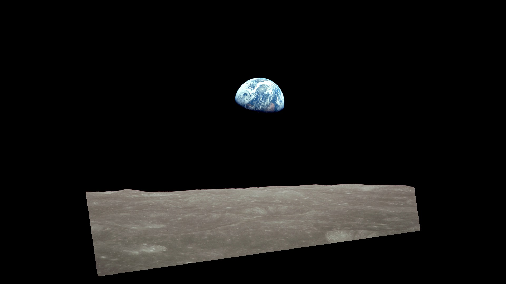

Earth & space weather
- DONKI
donki— solar flares, coronal mass ejections, and geomagnetic storms- Natural events
eonet_events,eonet_categories- EPIC
epic— full-disk Earth images- Earth imagery layers
gibs_tile_url— build a WMTS tile URL
NASA MCP is an open-source Model Context Protocol server. Connect it to an MCP client to search public NASA archives, check space weather, or look up near-Earth objects from a conversation.
Set up NASA MCP
Install and start Docker, then build the server on your computer. Your MCP client launches the container and communicates with it over standard input and output (stdio).
git clone https://github.com/RYASTRA/nasa-mcp.git
cd nasa-mcp
docker build -t nasa-mcp .Add the nasa entry to the mcpServers section of claude_desktop_config.json, then restart Claude Desktop.
{
"mcpServers": {
"nasa": {
"command": "docker",
"args": ["run", "--rm", "-i", "-e", "NASA_API_KEY", "nasa-mcp"],
"env": { "NASA_API_KEY": "your_key_here" }
}
}
}Replace your_key_here with your key. For a first run using NASA’s demo key, omit the env entry and the two arguments "-e", "NASA_API_KEY".
With NASA_API_KEY exported in the shell that launches Claude Code, register the server.
claude mcp add nasa -- docker run --rm -i -e NASA_API_KEY nasa-mcpChoose a local stdio server, set the command to docker, and use the arguments from the Claude Desktop example. Set NASA_API_KEY through your client’s environment settings if you have a key.
Some tools use a NASA API key. The server defaults to the rate-limited DEMO_KEY when the variable is unset. You can get a free NASA API key and store it in your local client configuration.
Each tool exposes its parameter names and descriptions to your MCP client. Use the names below to ask your assistant for a specific source.
donki — solar flares, coronal mass ejections, and geomagnetic stormseonet_events, eonet_categoriesepic — full-disk Earth imagesgibs_tile_url — build a WMTS tile URLneo_feed, neo_lookup, neo_browsessd_close_approaches, ssd_fireballs, ssd_sentrytle_search, tle_getssc_observatoriesexoplanet_query — query the archive using ADQLmars_weather — Curiosity REMS datatrek_tile_url — build a Solar System Treks tile URLapod, nivl_search, nivl_assetosdr_search, osdr_study_files, osdr_study_metadatatechport_projects, techport_projecttech_transfer — find patents, software, and spinoffsdocker images nasa-mcp.-i flag, and omit -t.NASA_API_KEY in your client configuration and restart or reconnect the client.